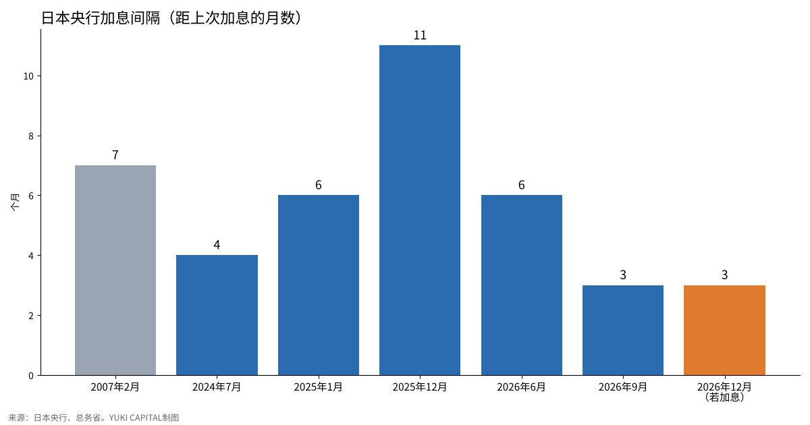
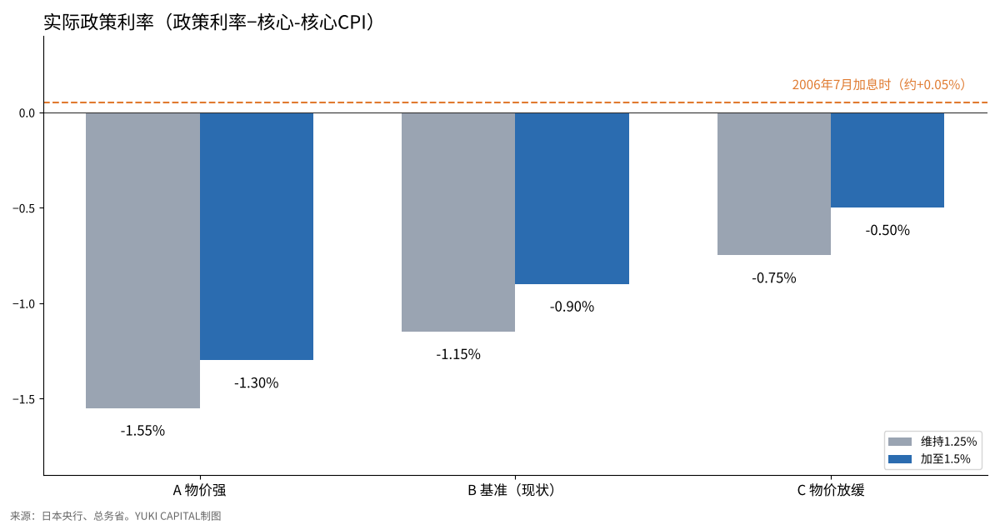

日本央行高田委员的“灵活加息”会在12月到来吗——用2006年与2024〜2026年的加息间隔、物价和日元汇率来检验
11月16日，日本央行审议委员高田创在德岛市演讲时表示，央行应当不拘泥于固定的间隔和幅度，灵活地推进加息。
在10月30日的议息会议上，高田提出把政策利率从1.25%上调至1.5%的议案，以8比1被否决。
本文的问题是：日本央行会在12月的议息会议上加息至1.5%，还是维持不变。

- 扣除物价后的实际政策利率，在2006年7月加息时约为0%，如今约为−1.2%，加息空间比2006年更大。
- 2024年3月以来，加息间隔从11个月缩短到3个月；距9月3个月后的12月，正处在这一趋势的延长线上。
- 可能成为按兵不动理由的，是年化−0.1%的7〜9月GDP和疲弱的消费；12月的判断将是这两点与日元贬值之间的拉锯。
问题与背景
政策利率是指日本央行引导的短期利率（无担保隔夜拆借利率）。实际政策利率是政策利率减去物价涨幅，本文使用剔除生鲜食品和能源的消费者物价（核心-核心CPI）。
中性利率是既不刺激也不抑制经济的利率水平。根据日本央行工作人员的估算，剔除物价后的实际中性利率（自然利率）大约在−1.0%〜+0.5%之间，区间很宽[8]。若物价稳定在2%，名义中性利率就是1.0%〜2.5%。
日本央行在2024年3月结束负利率，此后在2024年7月加息至0.25%，2025年1月至0.5%，2025年12月至0.75%，2026年6月至1.0%，2026年9月至1.25%[1]。10月30日维持1.25%不变，投反对票的只有高田1人[1]。
比较的对象是2006年。日本央行在2006年3月结束量化宽松，7月14日结束零利率并加息至0.25%，2007年2月再加息至0.5%[6]。那是日本走出通缩后第一次连续加息，起点与这次相近。
数据与方法
本文使用4类数字：政策利率的调整日期和幅度来自日本央行的公告[1][6]，物价来自总务省的消费者物价指数[3][7]，经济来自内阁府的GDP速报[4]，汇率来自财务省的干预记录[5]和市场收盘价。
方法有两个。第一，排列加息间隔（距上次加息几个月），看这一轮的速度。第二，比较每次加息当月的实际政策利率，看还剩多少加息空间。
根据市场利率推算的加息概率（隔夜指数掉期的定价）每天波动很大，来源不同数字也不同。本文不把概率作为答案的依据，只用公布的物价、经济和汇率数字来判断方向。
2006年的物价使用2006年8月基期调整下修后的数字。调整后，7月剔除生鲜食品的消费者物价涨幅为0.2%[7]。这次使用2026年9月剔除生鲜食品和能源的综合指数涨幅2.4%[3]。
本文也核对了市场的看法。大和总研预计，日本央行会在12月的会议上加息至1.5%，在2027年3月的会议上加息至1.75%，然后暂停[9]；若物价上行，2027年6月也可能加至2.0%[9]。本文不把这一预测当作答案，而是检验数字能否得出同样的结论。
结果
2006〜2007年的加息间隔是7个月。2024年3月以来依次为4个月、6个月、11个月、6个月、3个月，最近一次最短。如果12月加息，间隔同样是3个月。

12月加息也有先例。日本央行在2025年12月的会议上从0.5%加息至0.75%[1]，在不发布展望报告的会议上同样做出过加息决定。若这次加息，就是在一年后的同一个月再加0.25%。
2006年7月加息时的实际政策利率为0.25%−0.2%，约+0.05%；2007年2月约为0%。这次是1.25%−2.4%，约−1.15%。即使12月加至1.5%，也约为−0.9%，仍为负值。
| 2006年7月 | 2007年2月 | 2026年9月 | 2026年12月（若加息） | |
|---|---|---|---|---|
| 政策利率 | 0.25% | 0.5% | 1.25% | 1.5% |
| 物价（同比） | 0.2%（核心） | 0.0%左右（核心） | 2.4%（核心-核心） | 假定2.4% |
| 实际政策利率 | 约+0.05% | 约0% | 约−1.15% | 约−0.9% |
| 距上次加息 | —（首次） | 7个月 | 3个月 | 3个月 |
| 美元兑日元（约） | 116左右 | 120左右 | 157〜158 | 159（11/16） |
经济一侧偏弱。11月16日的初值显示，7〜9月实际GDP年化−0.1%，为4个季度以来首次负增长，个人消费环比−0.3%，连续两个季度下降[4]。另一方面，设备投资增长1.6%，内需整体为正[4]。
汇率处在日元贬值一侧。美元兑日元在11月13日触及160.19，16日纽约收于159.36。财务省在2024年于160附近合计买入约15.3万亿日元[5]，市场认为160是当局关注的水平。
此外，这一轮每次加息都是0.25%，没有一次加0.5%的先例。高田所说的“不拘泥于幅度”，也包含打破0.25%步幅的可能。不过就12月而言，市场以0.25%为前提。
敏感性分析
12月的判断取决于物价和经济数字。本文对会议前公布的10月、11月物价，以及12月8日的GDP修正值设定3种情形，估算实际政策利率和判断方向。
| 情形 | 核心-核心CPI | GDP修正值 | 维持1.25%时的实际利率 | 加至1.5%时的实际利率 | 方向 |
|---|---|---|---|---|---|
| A 物价强 | 2.8% | 上修（转正） | 约−1.55% | 约−1.3% | 加息 |
| B 基准（现状） | 2.4% | 维持−0.1% | 约−1.15% | 约−0.9% | 偏向加息 |
| C 物价放缓 | 2.0% | 下修（−0.5%以下） | 约−0.75% | 约−0.5% | 偏向维持 |

三种情形下，加至1.5%后的实际政策利率都仍为负。2006年是在实际利率接近0%时加息的，从物价看，这次的加息空间更大。只有在物价放缓、GDP又被下修的C情形下，维持不变才有理由。
本文也调整了汇率的前提。若日元明显跌破160，高田关于防止物价上行的论点会更有力，A和B会进一步偏向加息。若回到150出头，就接近C。
讨论
反对的观点来自经济。在消费连续两个季度下降时加息，房贷和中小企业借款的负担会先加重。10月有8人选择维持，这说明多数派仍然谨慎，这一事实分量很重[1]。
高田的论点是物价的二次效应。中长期通胀预期已升至2%以上，工资与价格更容易相互推升，因此央行应表明防止物价上行的姿态[2]。他也指出，需要关注通过汇率带来的物价上行[2]。
本文有三点局限。第一，自然利率的估算区间很宽，中性利率无法确定。第二，2006年与这次使用的物价口径不同（核心与核心-核心），严格来说不是同一把尺子。第三，从2027年4月起把食品消费税降至1%的法案，会暂时压低2027财年的物价，它对12月判断的影响难以读透。
2006年那一轮也有教训。日本央行加到0.5%就停了，2008年10月因全球金融危机降至0.3%。再往前，2000年8月结束零利率后，2001年3月又回到量化宽松，长期被批评为加息过早。日本有两次在事后被说加息太早。
不过，2000年和2006年的物价都在0%左右，加息后又回到了通缩。这次物价已连续一年以上高于2%，起点的物价水平不同。比起加息过早，这次更值得担心的是加息过晚，让日元贬值与物价上涨叠加。
检验标准很明确。若12月会议后政策利率为1.5%，本文“偏向加息”的判断就对了；若维持不变，可以理解为物价或经济数字落在C一侧。会议前公布的11月东京都区部物价，将是第一条线索。
结论
扣除物价后的实际政策利率比2006年加息时低1个百分点以上，加息空间很大，加息间隔也已缩短到3个月。12月不加息的理由，只有在GDP修正值进一步确认消费疲弱时才能成立。
因此本文的答案是“加息的可能性很高”。但这是建立在物价持续高于2%、美元兑日元接近160这些当前条件上的答案，条件变了，答案也会变。
我是这样看的
我在日本，持有日本4家银行的股票。我认为12月基本会加息。在利率进入下降阶段之前，我会继续持有这4家银行的股票。不过我不希望加息过快，政策利率若超过2%，我会认为加得太多了。
来源
- 日本央行《当前货币政策运作》2026年10月30日 https://www.boj.or.jp/mopo/mpmdeci/mpr_2026/k261030a.pdf
- 日本央行 审议委员高田创演讲 2026年11月16日 https://www.boj.or.jp/about/press/koen_2026/data/ko261116a1.pdf
- 日本总务省统计局《统计邮件新闻 No.1910》（2026年9月全国消费者物价指数）2026年10月23日 https://www.stat.go.jp/info/mail/pdf/20261023_no1910.pdf
- 日本内阁府 关于2026年7－9月GDP初值的谈话 2026年11月16日 https://www5.cao.go.jp/keizai1/danwa/1116_danwa.pdf
- 日本财务省《外汇平衡操作实施情况》 https://www.mof.go.jp/policy/international_policy/reference/feio/index.html
- 日本央行 2006年7月议息会议资料 https://www.boj.or.jp/mopo/gp_2006/gp0607.htm
- The Japan Times「July CPI up only 0.2% after base-year component change」2006年8月26日 https://japantimes.co.jp/news/2006/08/26/business/july-cpi-up-only-0-2-after-base-year-component-change
- Business+IT 关于日本央行工作人员自然利率估算的报道 2024年12月19日 https://www.sbbit.jp/article/refers/154804
- 大和总研 日本央行政策展望 2026年10月30日 https://www.dir.co.jp/report/research/economics/japan/20261030_026168.html
- Minkabu FX 东京外汇概况 2026年11月16日 https://fx.minkabu.jp/news/384534
图表与插图由YUKI CAPITAL制作
我每天在X上记录数字与判断。